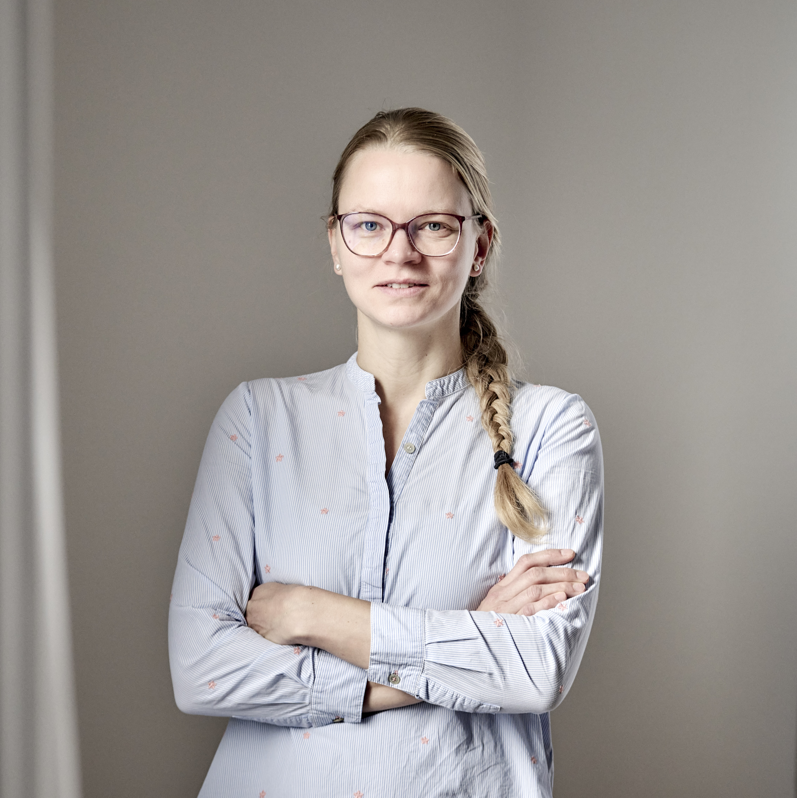

Towards Trustworthy Predictions: Theory and Applications of Calibration for Modern AI
5 May 2026
Tangier, Morocco
About the workshop
This workshop focuses on calibration, the alignment between predicted probabilities and observed frequencies, which is fundamental to reliable decision-making and trust in modern AI systems. Bringing together researchers from machine learning, statistics, theoretical computer science, and applied domains such as medicine and forecasting, the workshop aims to unify perspectives on calibration theory, evaluation, and practice. Through a tutorial, invited talks, contributed posters, and interactive discussions, we seek to foster a shared understanding of calibration and to build a lasting cross-disciplinary community around trustworthy probabilistic prediction.
Call for papers
The primary aim of this workshop is to bring together researchers and practitioners working on calibration across machine learning, statistics, theoretical computer science, and applied domains. We seek to clarify foundational questions, align evaluation practices, and explore the practical implications of calibration for reliable and trustworthy AI systems.
Topics
The potential topics include, but are not limited to:
- Foundations of calibration and probabilistic forecasting
- Calibration metrics and evaluation methodologies
- Proper scoring rules and decision-theoretic perspectives
- Calibration in high-dimensional and multiclass settings
- Post-hoc and end-to-end calibration methods
- Calibration under distribution shift
- Calibration for generative models and large language models
- Calibration in high-stakes applications (e.g., medicine, forecasting, finance)
- Connections between calibration, uncertainty, and trust in AI
Submissions
🚨 Submit to our workshop and win a free registration for AISTATS 2026 🚨
We will offer a free conference registration to the best workshop submission led by a student, don't miss the opportunity to showcase your work and attend the conference for free!
We invite submissions of short papers presenting recent work on calibration. Submissions are accepted through OpenReview.
If your paper about calibration (or a closely related topic) is already accepted at the main AISTATS 2026 conference (congrats 🎉), you can register to present it at our poster session by filling the following form: main conference paper track.
Important dates
- Call for contributions: January 12, 2026
- Submission deadline:
February 20, 2026📣 Extended deadline: February 27, 2026 (Anywhere on Earth) 📣 - Notification of acceptance: March 9, 2026
- Workshop date: May 5, 2026
Format
Submissions should be formatted using the AISTATS LaTeX style. Papers are limited to 4 pages (excluding references and appendices). The review process will be double-blind. Accepted contributions will be presented as posters during the workshop. If you include an appendix, keep in mind that reviewers might not read it carefully. Your principal idea / contribution should be understandable from the main text.
Policies
Submissions under review at other venues are allowed. All accepted papers are non-archival and will be made publicly available on OpenReview.
Speakers
Peter Flach
Tutorial — Foundations of CalibrationEwout W. Steyerberg
Keynote — Trustworthy Patient-level Predictions
Johanna Ziegel
Keynote — Calibration of Probabilistic PredictionsFlorian Buettner
Invited Talk — Calibrated Uncertainty for Biomedical Applications
Nika Haghtalab
Invited Talk — Multi-objective LearningSchedule
Coffee Break
Keynote Ewout W. Steyerberg
Towards Trustworthy Patient-level Predictions: A Multiverse of Uncertainty and Heterogeneity
Invited Talk Nika Haghtalab
Multi-objective Learning: An Algorithmic Toolbox for Optimal Predictions on any Downstream Task and Loss
Lunch Break
Keynote Johanna Ziegel
Calibration of Probabilistic Predictions
Invited Talk Florian Buettner
Leveraging Calibrated Uncertainty Estimates for Biomedical Applications
Break
Awarded Papers
Presentations by the Recipients of the Student Paper Award and Non-Student Paper Award
Poster Session
Contributed Posters Showcasing Recent Work on Calibration
Open Problems Session
Moderated Discussions on Open Challenges in Calibration
Accepted papers
Awards
-
🏆 Student Paper Award
Free Registration Award
From Entropy to Calibrated Uncertainty: Training Language Models to Reason About UncertaintyAzza Jenane, Nassim Walha, Lukas Kuhn, Florian Buettner -
🏆 Non-Student Paper Award
Calibrating the Calibration Tester: Optimal Binning and Minimax Calibration Testing for Continuous Predictive ModelsAlon Kipnis
Accepted papers
-
Interpretable Multivariate Conformal Prediction with Balanced and Jointly Calibrated Rectangular Envelopes
Nabil Alami, Rafael Izbicki, Souhaib Ben Taieb
-
Calibration Collapse Under Sycophancy Fine-Tuning: How Reward Hacking Breaks Uncertainty Quantification in LLMs
Subramanyam Sahoo
-
Full Conformal Prediction under Stochastic Non-Conformity Measure
Thanawat Sornwanee
-
SPACR: Single-Pass Adaptive Training of Uncertainty-Aware Conformal Regressors
Soundouss Messoudi, Sylvain Rousseau, Sebastien Destercke
-
On the Global and Local Calibration of Graph Neural Networks
Francesco Ferrini, Veronica Lachi, Antonio Longa, Cesare Barbera, Andrea Pugnana, Andrea Passerini, Manfred Jaeger
-
Calibrating the Calibration Tester: Optimal Binning and Minimax Calibration Testing for Continuous Predictive Models
Alon Kipnis
-
Same Graph, Different Likelihoods: Calibration of Autoregressive Graph Generators via Permutation-Equivalent Encodings
Laurits Fredsgaard, Aaron Thomas, Michael Riis Andersen, Mikkel N. Schmidt, Mahito Sugiyama
-
Multi-Class Classification with Abstention Based on Crammer–Singer Surrogate with Linear Growth Rate
Hongyu Zhang, Han Bao, Junya Honda
-
Bounding Worst-Case Calibration Error in OOD Detection Under Distribution Shift
Claudio Cesar Claros-Olivares, Austin J. Brockmeier
-
From Entropy to Calibrated Uncertainty: Training Language Models to Reason About Uncertainty
Azza Jenane, Nassim Walha, Lukas Kuhn, Florian Buettner
-
Bridging the "Predictability Desert": A Probabilistic Bias Correction Framework for AI and Dynamical Subseasonal Forecasts
Hannah Guan, Soukayna Mouatadid, Paulo Orenstein, Judah Cohen, Haiyu Dong, Genevieve Elaine Flaspohler, Alex Xijie Lu, Jonathan A. Weyn, Lester Mackey
-
Threshold Calibration: Making All Large Predicted Probabilities Trustworthy
Alexandru Lopotenco, Edgar Dobriban
-
Auditing the Performance and Calibration of Multi-Modal Large Language Models
Brendan Kennedy, Lauren Phillips, Sai Munikoti, Sameera Horawalavithana, Ian Stewart, Karl Pazdernik
-
Calibration in Context: A Case Study with Score Decompositions
Johannes Resin
-
Calibrated Multivariate Distributional Regression with Pre-Rank Regularization
Aya Laajil, Elnura Zhalieva, Naomi Desobry, Souhaib Ben Taieb
-
Where to Drop: Tuning Monte Carlo Dropout for Uncertainty Calibration in Image Classification
Lina Benyamina, Emilien Jemelen
-
Exploring Geometric Concentration for Quantifying Uncertainty in Scientific Image Caption Generation
Souradeep Chattopadhyay, Brendan Kennedy, Sai Munikoti, Karl Pazdernik, Soumik Sarkar
-
A Variational Estimator for Calibration Errors
Eugène Berta, Sacha Braun, David Holzmüller, Michael I. Jordan, Francis Bach
-
On the Calibration of Isotonic Distributional Regression
Tobias Biegert, Johannes Resin, Alexander I. Jordan, Sebastian Lerch
-
On Sharpness Diagrams
Alexander I. Jordan
-
Dirichlet Calibration Goes Local
Cesare Barbera, Lorenzo Perini, Giovanni De Toni, Andrea Passerini, Andrea Pugnana
-
Online Conformal Prediction via Universal Portfolio Algorithm
Tuo Liu, Edgar Dobriban, Francesco Orabona
-
When Synthetic Data Is Enough: Calibration for Tabular Model Ranking
Gennadii Filatov, Irina Deeva
-
When Does Calibration Matter for Safe Model Routing? Conformal Risk Control Under Imperfect Gate Calibration
Iqtedar Uddin, Mazin Khider, André Bauer
-
Demographic Calibration of Vision-Language Models for Dermatology
Sonnet Xu, Roxana Daneshjou
-
Calibrated Regression-as-Classification for Probabilistic Forecasting
Jef Jonkers, Glenn Van Wallendael, Luc Duchateau, Sofie Van Hoecke
-
Conformal Robust Optimization and Satisficing for Prescriptive Analytics with Black-Box Predictors
Lingjie Zhao, Hansheng Jiang, Wei Qi
-
Reward Calibration Beyond the Convex Hull: Depth-Based Feasibility and Regularized Exponential Tilting for Generative Models
Manoj Saravanan, Rohit Kumar Salla
-
Beyond Accuracy: Controlling Broad Error Types in Selective Classification
Emilien Jemelen, Sandrine Katsahian, Francisco Orchard, Agathe Guilloux
-
Conformal Calibration from Unlabelled Pools
Kianoosh Ashouritaklimi
-
Calibrated Multi-Level Quantile Forecasting
Tiffany Ding, Isaac Gibbs, Ryan Tibshirani
-
Towards a Venn-Abers Calibration Method for Object Detectors
Bruce Cyusa Mukama, Soundouss Messoudi, Sylvain Rousseau, Sebastien Destercke
Main conference track accepted papers
-
On the calibration of survival models with competing risks
Julie Alberge, Tristan Haugomat, Gaël Varoquaux, Judith Abécassis
-
Policy-Oriented Binary Classification: Improving (KD-)CART Final Splits for Subpopulation Targeting
Bill Wang, Zhenbang Jiao, Fangyi Wang
-
Scalable Utility-Aware multiclass calibration
Mahmoud Hegazy, Michael Jordan, Aymeric Dieuleveut
-
Brenier Isotonic Regression
Han Bao, Amirreza Eshraghi, Yutong Wang
-
Patch2Loc: Learning to Localize Patches for Unsupervised Brain Lesion Detection
Hassan Baker, Austin J. Brockmeier
-
Calibrated Predictive Lower Bounds on Time-to-Unsafe-Sampling in LLMs
Hen Davidov, Shai Feldman, Gilad Freidkin, Yaniv Romano
-
Computationally Lightweight Classifiers with Frequentist Bounds on Prediction Errors
Shreeram Murali, Cristian Rojas, Dominik Baumann
-
Structured Matrix Scaling for Multi-Class Calibration
Eugène Berta, David Holzmüller, Michael Jordan, Francis Bach
-
Panprediction: Optimal Predictions for Any Downstream Task and Loss
Sivaraman Balakrishnan, Nika Haghtalab, Daniel Hsu, Brian Lee, Eric Zhao
-
Regularizing attention scores with bootstrapping
Neo Christopher Chung, Maxim Laletin
-
Multiclass Local Calibration with the Jensen-Shannon Distance
Cesare Barbera, Lorenzo Perini, Giovanni De Toni, Andrea Passerini, Andrea Pugnana
Organizers
Sebastian Gruber
KU LeuvenTeodora Popordanoska
KU LeuvenYifan Wu
Microsoft ResearchEugène Berta
INRIAFrancis Bach
INRIAEdgar Dobriban
University of PennsylvaniaTips for attendees
Conference venue
Hilton Tanger Al Houara
Km 17.5, Route de l'Aéroport, Al Houara, Tangier, 90000, Morocco
Poster printing
Participants are responsible for printing their own posters.
Poster board specifications
- Dimensions: 2.4 m x 1.2 m
- Material: 100% wood
- Fixing method: pins or command strips